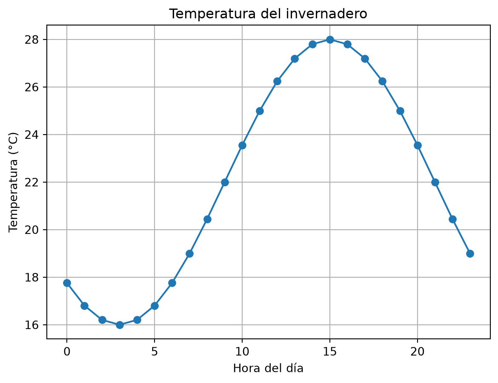
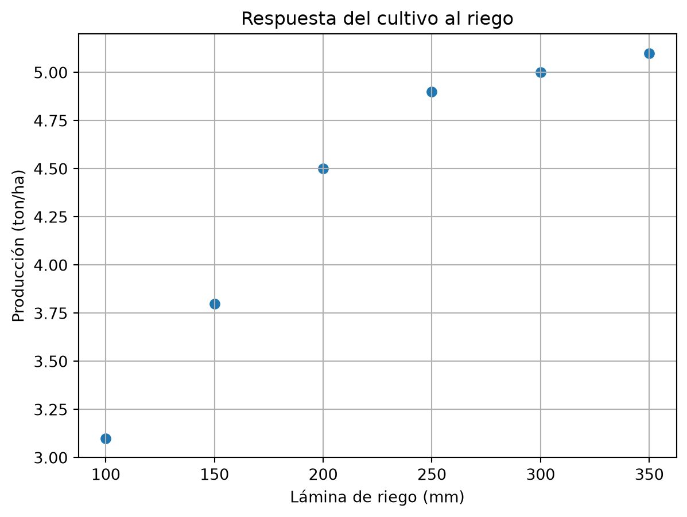
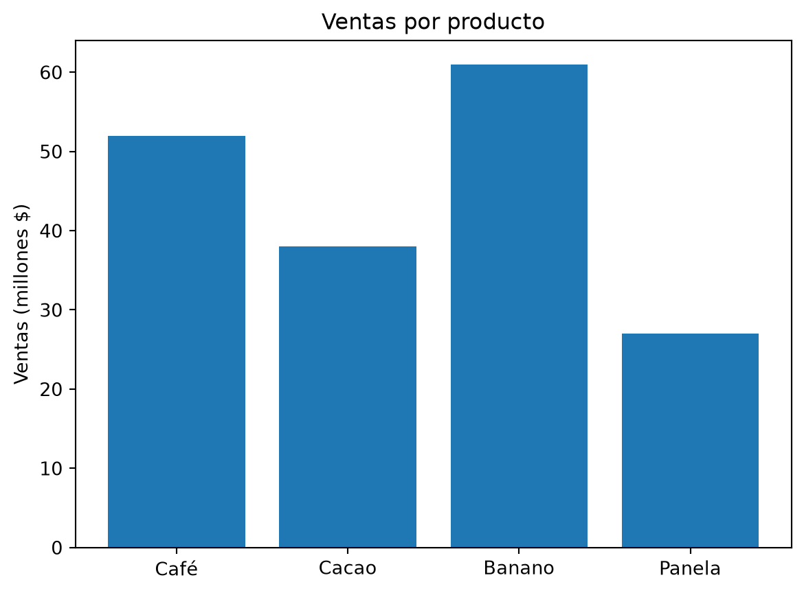
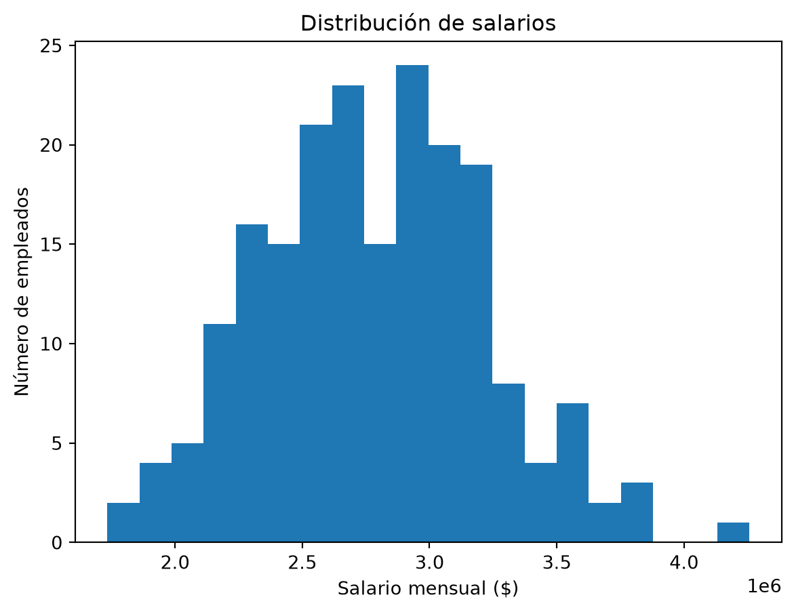
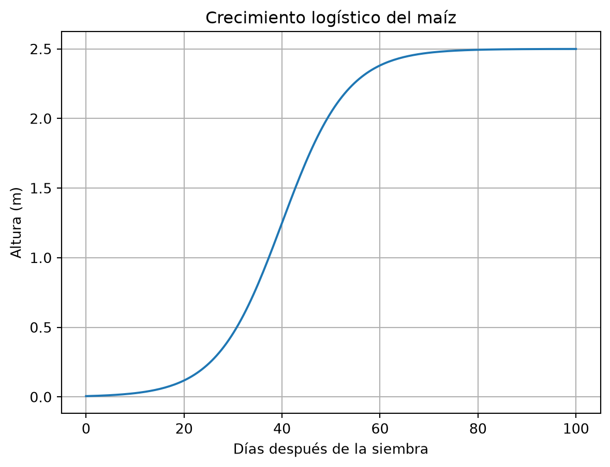

import numpy as np5 NumPy y gráficas: cómputo científico
Hasta aquí trabajaste con valores sueltos y listas. La ingeniería y la economía manejan otra cosa: miles de datos a la vez — todas las lecturas de un sensor, los precios de un año, la producción de 500 parcelas. Hacer eso con listas y ciclos for es lento y enredado. La solución es NumPy: la librería que convierte a Python en una máquina de cálculo numérico. Y para ver los resultados, Matplotlib: la librería de gráficas.
5.1 Librerías: código que otros escribieron por ti
Una librería es un paquete de funciones listas para usar. Se carga con import:
La convención as np le pone un apodo corto: en vez de escribir numpy.array escribes np.array. En Colab, NumPy y Matplotlib ya vienen instaladas; solo hay que importarlas.
5.2 El array: una lista con superpoderes
El objeto central de NumPy es el array. Se parece a una lista, pero permite operar sobre todos sus elementos a la vez:
import numpy as np
rendimientos = np.array([4.2, 3.8, 5.1, 4.6, 3.9]) # toneladas por hectárea
# Convertir todo a kg/ha de una sola vez:
rendimientos_kg = rendimientos * 1000
print(rendimientos_kg)[4200. 3800. 5100. 4600. 3900.]Con una lista normal, lista * 1000 daría error (o algo raro). Con un array, la operación se aplica elemento por elemento. Esto se llama vectorización y es la idea más importante del capítulo.
Otro ejemplo típico de mecatrónica: un sensor entrega temperaturas en Celsius y el sistema las necesita en Fahrenheit:
celsius = np.array([20.0, 22.5, 25.1, 31.8, 28.4])
fahrenheit = celsius * 9 / 5 + 32
print(fahrenheit)[68. 72.5 77.18 89.24 83.12]Ni un solo ciclo. La fórmula se escribe como en álgebra y se aplica a todo el arreglo.
5.3 Crear secuencias de datos
NumPy tiene funciones para generar arrays sin escribir los valores a mano:
print(np.arange(0, 10, 2)) # de 0 a 10 (sin incluir), de 2 en 2
print(np.linspace(0, 1, 5)) # 5 valores igualmente espaciados entre 0 y 1
print(np.zeros(4)) # cuatro ceros
print(np.ones(3)) # tres unos[0 2 4 6 8]
[0. 0.25 0.5 0.75 1. ]
[0. 0. 0. 0.]
[1. 1. 1.]linspace es el favorito para graficar funciones: genera los puntos del eje x.
5.4 Estadística instantánea
Los arrays traen métodos estadísticos incorporados:
produccion = np.array([4.2, 3.8, 5.1, 4.6, 3.9, 4.8, 2.9, 5.0])
print(f"Promedio: {produccion.mean():.2f} ton/ha")
print(f"Desviación: {produccion.std():.2f}")
print(f"Máximo: {produccion.max()} ton/ha")
print(f"Parcela del máximo: {produccion.argmax()}")Promedio: 4.29 ton/ha
Desviación: 0.69
Máximo: 5.1 ton/ha
Parcela del máximo: 2argmax() no devuelve el valor máximo sino su posición: útil para saber cuál parcela fue la mejor.
5.5 Gráficas con Matplotlib
Un número dice poco; una gráfica lo dice todo. Matplotlib se importa así:
import matplotlib.pyplot as pltLa gráfica mínima tiene cuatro ingredientes: datos, plot, etiquetas y show:
import numpy as np
import matplotlib.pyplot as plt
horas = np.arange(0, 24) # 0 a 23
temperatura = 22 + 6 * np.sin((horas - 9) * np.pi / 12) # modelo simple de un día
plt.plot(horas, temperatura, marker="o")
plt.xlabel("Hora del día")
plt.ylabel("Temperatura (°C)")
plt.title("Temperatura del invernadero")
plt.grid(True)
plt.show()
5.5.1 Otros tipos de gráfica útiles
Dispersión (scatter): para ver relación entre dos variables, por ejemplo inversión en riego vs. producción:
riego = np.array([100, 150, 200, 250, 300, 350]) # mm de agua
produccion = np.array([3.1, 3.8, 4.5, 4.9, 5.0, 5.1]) # ton/ha
plt.scatter(riego, produccion)
plt.xlabel("Lámina de riego (mm)")
plt.ylabel("Producción (ton/ha)")
plt.title("Respuesta del cultivo al riego")
plt.grid(True)
plt.show()
Barras (bar): para comparar categorías:
productos = ["Café", "Cacao", "Banano", "Panela"]
ventas = [52, 38, 61, 27] # millones
plt.bar(productos, ventas)
plt.ylabel("Ventas (millones $)")
plt.title("Ventas por producto")
plt.show()
Histograma (hist): para ver cómo se distribuyen los datos:
rng = np.random.default_rng(42)
salarios = rng.normal(2800000, 500000, 200) # 200 salarios simulados
plt.hist(salarios, bins=20)
plt.xlabel("Salario mensual ($)")
plt.ylabel("Número de empleados")
plt.title("Distribución de salarios")
plt.show()
5.6 Aplicación de ingeniería: simular y graficar un fenómeno
El flujo de trabajo ingenieril completo: modelo matemático → array de tiempo → simulación → gráfica. Ejemplo: la altura de una planta de maíz sigue aproximadamente una curva logística
\[h(t) = \frac{H}{1 + e^{-k(t - t_0)}}\]
donde \(H\) es la altura máxima, \(k\) la velocidad de crecimiento y \(t_0\) el día de crecimiento más rápido:
H = 2.5 # altura máxima (m)
k = 0.15 # velocidad de crecimiento
t0 = 40 # día de máximo crecimiento
t = np.linspace(0, 100, 200) # 100 días, 200 puntos
h = H / (1 + np.exp(-k * (t - t0)))
plt.plot(t, h)
plt.xlabel("Días después de la siembra")
plt.ylabel("Altura (m)")
plt.title("Crecimiento logístico del maíz")
plt.grid(True)
plt.show()
Cambia k a 0.25 y vuelve a ejecutar: verás cómo el modelo responde. Este ciclo modelo → simulación → gráfica es exactamente el que usarás en proyectos reales de ingeniería.
5.7 Ejercicios
- Convierte un array de precios en dólares a pesos colombianos (tasa: 1 USD = 4200 COP) usando vectorización:
precios_usd = np.array([10, 25, 7.5, 100]). - Genera 50 puntos entre 0 y \(2\pi\) con
linspacey grafica \(\sin(x)\) con etiquetas y grilla. - Simula la temperatura de un motor que se calienta según \(T(t) = 25 + 65(1 - e^{-t/10})\) °C, para \(t\) entre 0 y 60 minutos. Grafica y determina a qué valor tiende la temperatura.
- Con el array
costos = np.array([4.5, 2.1, 8.3, 1.9, 6.7, 3.2])(millones), encuentra conargmax()el índice del costo mayor y su valor. - Grafica con barras las ventas de 6 meses que tú inventes, con título y etiquetas.
- Mini-reto (mecatrónica + administración): un sensor de humedad da lecturas crudas en voltios:
v = np.array([0.8, 1.2, 1.7, 2.1, 2.9, 3.3]). La calibración del fabricante es \(\text{humedad} = 18 \cdot v - 5\) (%). (a) Convierte el array completo a humedad. (b) Grafica voltaje vs. humedad. (c) La empresa solo vende el sensor si la humedad máxima medida supera el 50 %; imprime con unifsi pasa o no la prueba.
5.8 Resumen
- NumPy trabaja con arrays: operaciones sobre todos los datos a la vez (vectorización), sin ciclos.
arange,linspace,zeros,onesgeneran datos;.mean(),.std(),.max(),.argmax()los resumen.- Matplotlib grafica:
plot(líneas),scatter(dispersión),bar(barras),hist(histogramas), siempre conxlabel,ylabel,title,grid. - El flujo modelo → array de tiempo → simulación → gráfica es la base del cómputo en ingeniería.